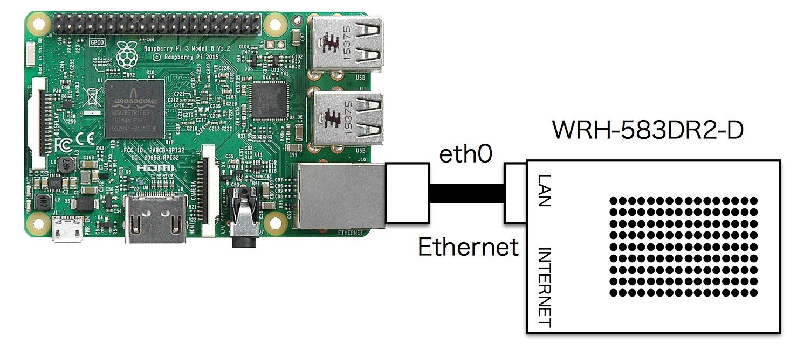
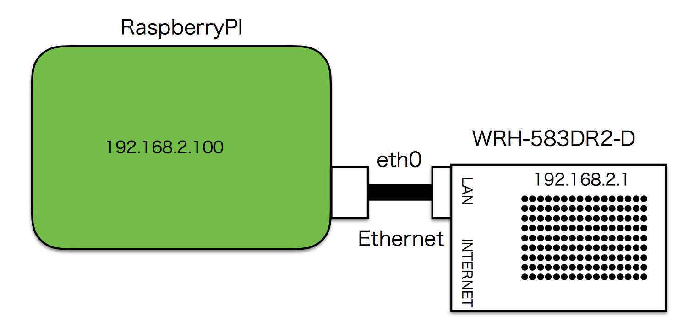
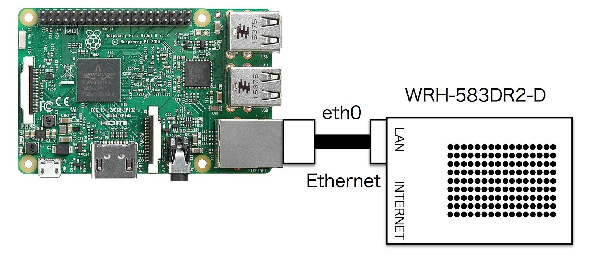
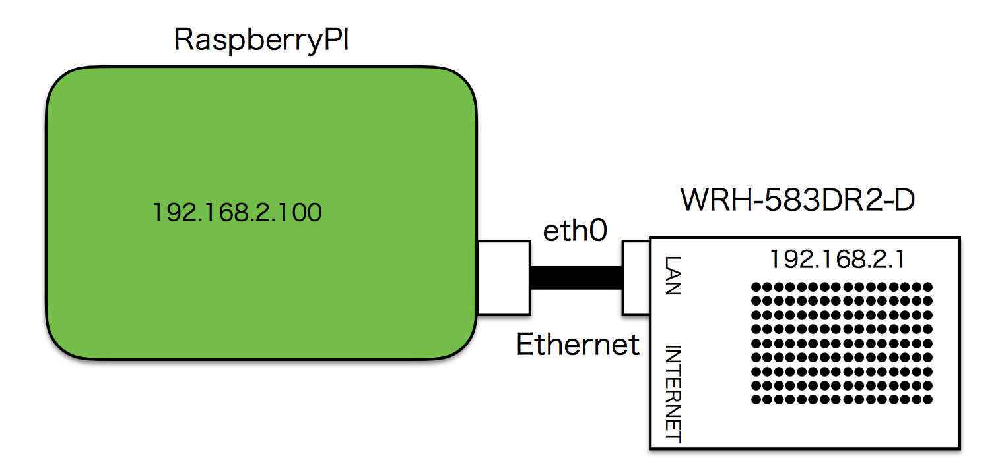

そのほか
Wifi Router


| デバイス | IP |
|---|---|
| WR-583RD2-2 | 192.168.2.1 |
| RaspberryPI | 192.168.2.100 |
/home/pi/env/lib/python3.5/site-packages/donkeycar/parts/web_controller/


| デバイス | IP |
|---|---|
| WR-583RD2-2 | 192.168.2.1 |
| RaspberryPI | 192.168.2.100 |
/home/pi/env/lib/python3.5/site-packages/donkeycar/parts/web_controller/